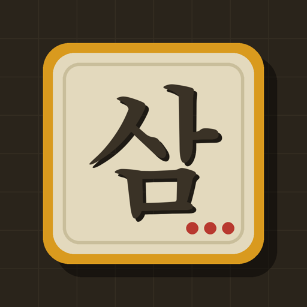

한글 삼국지 디펜스
글자를 놓으면 장수가 온다 — 한글 머지 디펜스
보도 자료 한꺼번에 받기 (ZIP · 12MB)Google Play
소개
「한글 삼국지 디펜스」에서는 글자가 곧 병사다. 「도」는 칼을 들고 「궁」은 활을 쏘며, 같은 글자를 겹치면 강해진다. 길 옆 빈칸에 글자를 놓다가 「관」 옆에 「우」를 붙이면 관우가 전장에 나선다. 플레이어는 좁은 땅에서 장수의 이름을 맞춰 나가고, 같은 적을 맞는 상대 군주(장마다 정해진 연의 속 적장)를 먼저 무너뜨리면 이긴다. 한 판은 3~5분이다.
등장 장수는 48명이고 그 가운데 43명이 각성한다. 간판 장수 12명은 필살기마다 고유 연출이 있다 — 관우의 청룡 반달, 조운의 칠진칠출, 제갈량의 팔진, 여포의 회오리. 원정은 황건의 난에서 출사표 · 북벌까지 9장 33전장. 결제하지 않아도 끝까지 플레이할 수 있고, 광고는 이용자가 원할 때만 보는 보상형이다. 오프라인에서도 즐길 수 있으며 진행은 Google 계정 클라우드에 저장된다.
게임 정보
- 게임명
- 한글 삼국지 디펜스
- 장르
- 한글 머지 디펜스
- 플랫폼
- Android (Google Play)
- 출시
- 2026년 10월
- 이용등급
- 전체이용가
- 가격
- 무료 · 선택형 인앱 구매(확률형 아이템 포함 · 확률 게임 안에 공개)
- 광고
- 보상형 — 원할 때만
- 특징
- 장수 48명(각성 43) · 원정 9장 33전장 · 한 판 3~5분 · 간판 장수 12명 고유 연출 · 오프라인 플레이 · 클라우드 저장
- 개발 · 서비스
- 주식회사 위리드코퍼레이션 (Welead Corporation)
- 문의
- support@welead.fun
영상
15초 · 1080×1920 · 실제 게임 화면 · 내려받기
스크린샷 (1080×1920)


아이콘 512 · icon-512.png · 피처 그래픽 · 1024×500


개발사
주식회사 위리드코퍼레이션(Welead Corporation) — 한글과 삼국지를 좋아하는 사람이 짧은 시간에 가볍게 즐길 수 있는 게임을 만든다. 취재 · 인터뷰 · 추가 자료는 support@welead.fun 으로 연락 주세요.